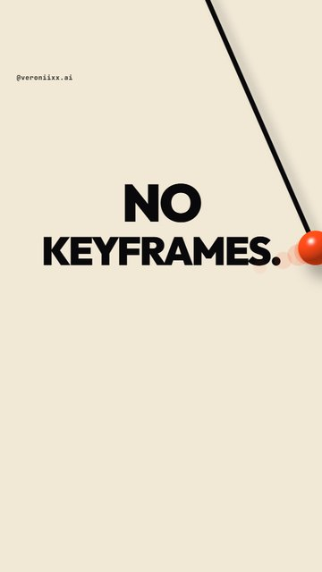
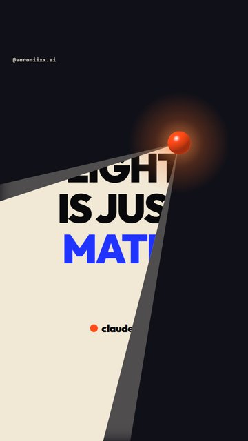
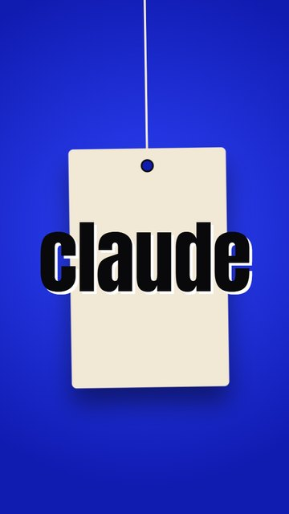

Шоурил
без
монтажа.
Как собрать зацикленный моушен-ролик с музыкой в Claude Code: слова в такт, маятник, лампа, кубики. От установки до готового mp4. Windows и Mac.





Что ты получишь
Вертикальный ролик 1080×1920, который крутится по кругу без шва. Текст в такт, свет, 3D-кубики и музыка, синтезированная кодом. Ты пишешь словами, что хочешь увидеть. Claude пишет код, рендерит кадры, делает звук и склеивает файл.
Что нужно заранее
- Компьютер на Windows 10/11 или macOS. Для частей с 3D желательна видеокарта: без неё рендер идёт заметно дольше.
- Подписка Claude Pro или выше. Claude Code в неё входит.
- Примерно 3 ГБ свободного места и интернет.
Как это устроено
Ставим пять программ
Всё ставится командами в терминале. Копируй блок целиком, вставляй, жми Enter.
1Открой терминал
Windows
Нажми клавишу Win, набери PowerShell, открой.
Mac
Нажми Cmd + Пробел, набери Terminal, открой.
2Поставь Node.js, Git, Python и ffmpeg
Windows Вставляй по одной строке. На вопросы установщика отвечай Y.
winget install -e --id OpenJS.NodeJS.LTS winget install -e --id Git.Git winget install -e --id Python.Python.3.12 winget install -e --id Gyan.FFmpeg
Mac Сначала Homebrew. Это установщик программ для Mac, он попросит пароль от компьютера.
/bin/bash -c "$(curl -fsSL https://raw.githubusercontent.com/Homebrew/install/HEAD/install.sh)"
В конце Homebrew покажет две строки под заголовком Next steps. Скопируй их из своего терминала и выполни. Потом:
brew install node git python ffmpeg
3Поставь Claude Code
Одинаково на Windows и Mac:
npm install -g @anthropic-ai/claude-code
Не хочешь работать в терминале: поставь приложение Claude с claude.ai/download. В нём есть вкладка Code, она делает то же самое.
4Проверь, что всё встало
Windows
node -v; python --version; ffmpeg -version; claude --version
Mac
node -v; python3 --version; ffmpeg -version; claude --version
Каждая команда должна ответить номером версии. Если какая-то пишет «не найдено», закрой терминал, открой снова и повтори.
Создаём папку и запускаем Claude
1Папка и запуск
Windows
mkdir $HOME\showreel cd $HOME\showreel claude
Mac
mkdir ~/showreel cd ~/showreel claude
При первом запуске Claude откроет браузер и попросит войти в аккаунт. Войди и вернись в терминал.
2Первый промпт: подготовка
Вставь это в Claude. Он поставит всё нужное и проверит, что 3D-графика рендерится.
Подготовь в этой папке проект для моушен-роликов. 1. Поставь Remotion (React 18 + TypeScript). 2. Создай Python-окружение .venv и поставь в него numpy, scipy, soundfile, pyloudnorm. 3. Проверь, что ffmpeg доступен из терминала. 4. Сделай тестовую композицию 1080×1920, 30 fps с простым WebGL-шейдером на canvas, отрендери один кадр в PNG (chromiumOptions gl: 'angle') и покажи мне путь к файлу. Если чего-то не хватает, установи сам и напиши, что поставил. Если что-то не получается, не останавливайся: найди причину и почини.
Бриф, который делает ролик
Это бриф моего ролика. В квадратных скобках то, что ты меняешь под себя: слова, цвета, ник. Текст в кадре у меня на английском, потому что ролик шёл на англоязычную аудиторию. Хочешь русский: напиши слова по-русски и попроси шрифты с кириллицей.
Собери зацикленный моушен-шоурил: 19.2 секунды, 576 кадров, 30 fps, 1080×1920, H.264 CRF 18, yuv420p. Текст на экране на английском. Ролик показывает, что [Claude / мой бренд] умеет делать с типографикой, светом и объёмом. СЕТКА (главное правило) Темп 150 BPM. При 30 fps одна доля = 12 кадров, один такт = 48 кадров. Всего 12 тактов. Вся анимация и весь звук считаются от этой сетки. ТЕХСТЕК Remotion + React + TypeScript для видео. WebGL2-шейдеры на canvas для 3D-частей (рендер с chromiumOptions gl: 'angle'). Python + numpy + scipy + soundfile + pyloudnorm для звука. ffmpeg для финальной склейки. Шрифты: Outfit Black для слов, Anton для высоких заголовков, JetBrains Mono для ника. ПАЛИТРА Чёрный [#09090B], кость [#F1E8D6], один акцент [#FF4A17], второй цвет для нарезки [#2133FF]. ГЕРОЙ Один оранжевый шарик проходит через весь ролик: прыгает в такт, становится грузом маятника, становится лампой, в конце возвращается в центр. ЧАСТИ 1. СЛОВА В ТАКТ (такты 1–2). Одно слово на долю: "[we / don't / just / prompt. / we / direct. / type / light / depth]". Фон на каждое слово переключается между чёрным и костью. В кадре больше ничего, кроме шарика, который на каждое слово перепрыгивает с края на край. 2. МАЯТНИК (такты 3–5). Шарик взлетает и становится грузом маятника. Каждый мах стирает фразу и пишет следующую: "[MADE BY HAND? / MADE BY CODE. / NO TIMELINE. / NO KEYFRAMES. / JUST WORDS. / AND LIGHT.]". Мах неравномерный: быстрый пролёт через текст, потом груз висит в крайней точке, чтобы каждая фраза целиком читалась полсекунды. Последний мах стирает кадр в темноту. 3. ЛАМПА (такты 6–8). Тот же шарик отрывается от маятника, летит в центр и начинает светить. Лампа это сам шарик, отдельного корпуса нет. Конус света ходит по кадру и высвечивает из темноты страницу "[LIGHT IS JUST MATH.]", потом раскрывается на весь кадр. 4. НАРЕЗКА С ЛОГОТИПОМ (такты 9–10). Слово "[claude]" стоит неподвижно в центре. За ним 16 планов по 6 кадров: жидкая капля, тоннель, воксели, полутоновые торы, рой фигур, палитра, бирка, стеклянный телефон, сетки. Прямые склейки. У логотипа жёсткая тень противоположного цвета, чтобы он читался на любом плане. 5. КУБИКИ (такт 11). Около 1600 кубиков слетаются в объёмное слово "[OPUS]", камера облетает его, слово взрывается в объектив. 6. ФИНАЛ (такт 12). "[directed in words • made with claude opus]", шарик возвращается в центр. Последний кадр должен совпадать с первым: ролик зациклен. ПРАВИЛА ДЛЯ ТЕКСТА Слова входят через маску или чистым ударом масштаба. Никакого blur и тряски. Маска не должна срезать ни одну букву: проверь хвосты букв. Единственный мелкий текст в кадре: "[@мой_ник]" сверху. ЗВУК Синтезируй всё сам в numpy, без готовых файлов. 150 BPM, ломаный бит, рычащий бас, том на каждое слово, свист на каждый мах маятника, гул лампы и брейк без барабанов под лампой, глитч на каждой склейке нарезки, удар в финале. Каждый звук ставь по номеру кадра. Звук тоже зацикли: бас тянется через шов, хэты и сбивка нарастают к нулевому кадру, хвосты реверба из конца переходят в начало. Мастер: −14 LUFS, true peak после AAC не выше −1 dBTP, стерео 48 kHz. ПОРЯДОК РАБОТЫ 1. Создай файлы. Проверка типов должна проходить. 2. Отрендери 40 ключевых кадров в один контакт-шит и посмотри на него сам. 3. Self-QA: пройди по каждой части и каждому стыку. Ищи срезанные буквы, текст за краем кадра, наложения, чёрные кадры, полустёртые фразы. Нашёл ошибку: исправь и перерендери. 4. Собери финальный mp4 со звуком. 5. Проверь по готовому файлу: длительность, число кадров, громкость, разницу между первым и последним кадром. 6. Одним сообщением напиши: путь к файлу, размер, громкость, что проверил и что не смог проверить. Не останавливайся, пока не будет готового mp4 со звуком.
Три правила ролика
1Правило 12 кадров
Выбери темп, при котором одна доля занимает целое число кадров. Тогда музыку и картинку можно считать от одной линейки, и всё попадает в бит без подгонки.
| Темп | Кадров на долю | Характер |
|---|---|---|
| 100 BPM | 18 | Уверенный, для объяснений |
| 120 BPM | 15 | Энергичный, универсальный |
| 150 BPM | 12 | Быстрый, для нарезок. Этот ролик |
Формула при 30 кадрах в секунду: 1800 / BPM. Получилось дробное число: темп не подходит.
2Один герой через весь ролик
Оранжевый шарик есть в каждой части и каждый раз превращается в следующий предмет: в груз маятника, в лампу, в точку финала. Поэтому переходы выглядят логично, а не как склейка разных роликов. Если переход кажется случайным, спроси себя: что именно из прошлой сцены перешло в следующую?
3Петля
Последний кадр равен первому, а звук склеен на шве: бас тянется через стык, сбивка подводит к первому удару. Зритель не замечает конца и смотрит второй круг. Плеер Instagram при повторе иногда вставляет свою короткую паузу, от файла это не зависит.
Как доводить ролик
Не объясняй, как чинить. Говори, что видишь и что хочешь. Вот замечания, которыми я довела ролик до финала.
В первой части у слов срезаны хвосты букв. Убери маску, которая их режет, проверь каждое слово на увеличенном кадре и перерендери.
Переход от маятника к лампе нелогичный: оранжевый шарик исчезает и появляется другой предмет. Сделай лампой сам шарик: он отрывается от маятника, летит в центр и начинает светить.
В первой части слишком много всего. Оставь только слово и меняющийся цвет фона, плюс шарик, который прыгает на каждое слово. Остальные части не трогай.
Убери все мелкие подписи и счётчики. Оставь только мой ник вверху.
Ролик должен быть вечным. Склей звук так, чтобы на повторе не было слышно шва: музыка не затихает в конце и подводит к первому удару.
Шесть багов этого ролика
| Что было | Что помогло |
|---|---|
| Слова не влезали в ширину кадра | Проверка контакт-шита. Размер вписан под самое длинное слово. |
| Срезанные хвосты букв | Маска убрана, вход слова заменён на удар масштаба. |
| Полустёртые фразы на маятнике | Мах сделан неравномерным: быстрый пролёт, пауза в крайней точке. |
| Логотип терялся на пёстрых планах | Жёсткая тень противоположного цвета вместо режима смешивания. |
| Лишние полоски света до включения лампы | Покадровая проверка стыка, конус спрятан до включения. |
| Пик звука вылез после сжатия в AAC | Громкость измерена по готовому mp4, потолок лимитера опущен. |
Частые вопросы
Сколько это стоит?
Нужна только подписка Claude. Node.js, Python, ffmpeg и Remotion бесплатны для личного использования. У Remotion есть платная лицензия для компаний: если делаешь ролики для бизнеса, посмотри условия на remotion.dev.
Терминал выдал красную ошибку. Что делать?
Скопируй текст ошибки и вставь Claude со словами «вот что произошло, почини».
Claude остановился и ждёт. Это нормально?
Да. Либо он спрашивает разрешение на команду, либо закончил этап. Прочитай последнее сообщение и ответь или напиши «продолжай до финала».
Получится такой же ролик, как у меня?
Похожий по структуре, но не идентичный. Claude каждый раз решает детали заново. Это плюс: у тебя будет свой.
Claude слышит музыку?
Нет. Он её синтезирует и измеряет громкость, но не слушает. Звук и движение всегда проверяй сама, на телефоне.
Перед тем как выложить
- Посмотри ролик со звуком на телефоне два круга подряд: слышен ли шов.
- Важный текст не должен попадать в нижнюю четверть кадра: там описание и кнопки Instagram.
- В описании одна короткая мысль и одно действие: какое слово написать в комментарии.
Собери свой и отметь меня
Выложи ролик и отметь @veroniixx.ai. Лучшие покажу в сторис.
Больше промптов в моём Telegram-канале: t.me/veronixai